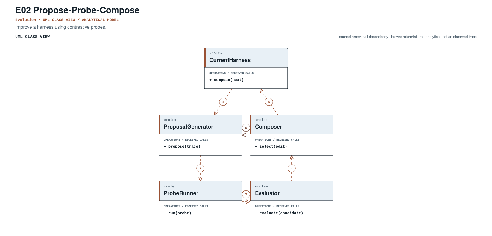
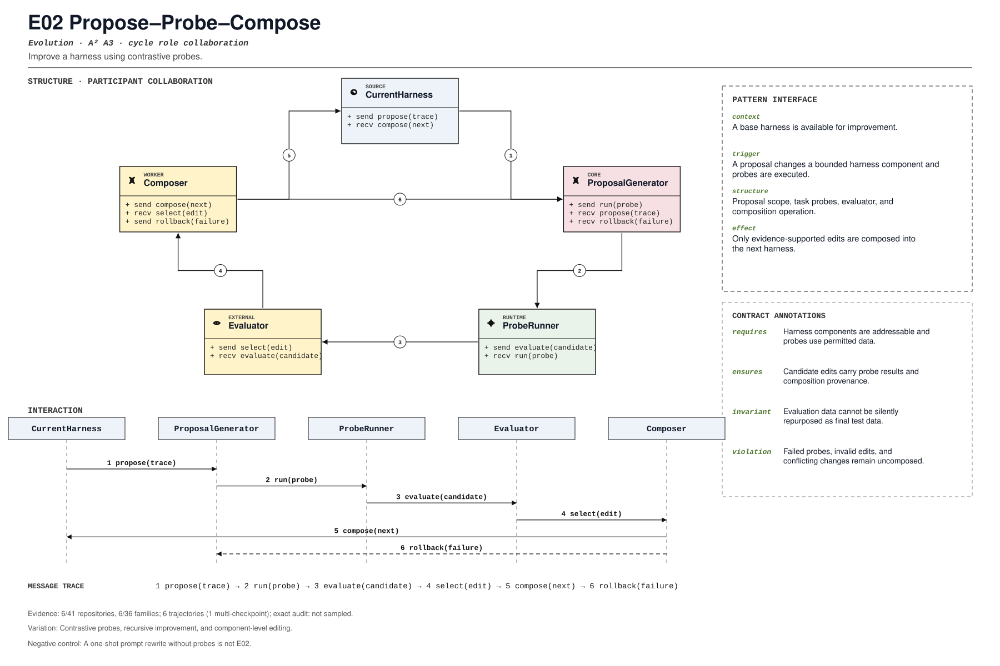

PROMPT SKETCH
Propose a harness edit, probe it on permitted cases, and compose only edits whose probe results support the change. Keep the proposed diff, probe evidence, and provenance together.Improve a harness using contrastive probes.
harness_edit_cycleRECORD STATUSCandidate · v0.1.0The proposed contract drawn as participant roles, received calls, and numbered dependencies.

The same roles and calls as a class collaboration and a numbered message sequence.

Where the mechanism applies. All four dimensions belong to the proposed match, not just its vocabulary.
The obligation that clients, operators, and auditors should be able to rely on.
A one-shot prompt rewrite without probes is not E02.
The hot spot is admitted only where the protected semantics survive.
Contrastive probes, recursive improvement, and component-level editing.
Test accepted edit, rejected edit, leakage, and composition rollback.
Did harness edits become evidence-gated and attributable?
An illustrative prompt and a small design sketch for the proposed contract. Names and APIs are invented; this is not a repository excerpt.
Propose a harness edit, probe it on permitted cases, and compose only edits whose probe results support the change. Keep the proposed diff, probe evidence, and provenance together.def improve(harness, probes):
proposal = proposer.edit(harness)
results = [probe.run(proposal.candidate) for probe in probes]
record = EditRecord(proposal.diff, results, harness.version)
if not all(result.accepted for result in results):
return Rejected(record)
return Composed(harness.apply(proposal), record)Illustrative design sketch. A probe is evidence about this edit, not a universal guarantee for the next one. This example is a teaching aid, not implementation evidence or a conformance claim.
The frozen rule that retrieves this record, the canonical source exemplar, and the control that should stay unmatched.
harness_edit_cycle(?i)\bpropose[_-]?probe[_-]?compose\b|\bproposal\b.*\bprobe\b|\bprobe\b.*\bcompose\bFrozen expression, v0.1.0. A match is a retrieval cue, not a confirmed implementation.harness2/core/recursion.py:360Support: tests/test_workflow.py:139Up to five public files retrieved by the frozen cue and pinned to the audited commit. A match is a place to inspect, not a confirmed implementation.
harness2/core/recursion.py:360CANONICAL SOURCE02langflow-ai/langflowsrc/lfx/src/lfx/services/settings/groups/runtime.py:216RETRIEVAL CUE03QwenLM/qwen-codepackages/cli/src/serve/routes/health.ts:32RETRIEVAL CUE04affaan-m/ECCdocs/design/context-profile-ai-evaluation.md:94RETRIEVAL CUE05bytedance/deer-flowbackend/tests/support/compose.py:24RETRIEVAL CUEEach layer answers a different question. Do not substitute retrieval for review.
A concrete source anchor is available for this proposed record. It is one exemplar, not evidence that all repositories—or every contract field—conform.
Review boundary: this candidate and its specification come from an AI-assisted study. Independent human validation remains open.
16.7% of repository families in the frozen panel have at least one current cue, historical cue, or canonical source layer. This is not confirmed prevalence.
Current lexical-cue repositories: 6 / 41686881751887harness2/core/recursion.py:360tests/test_workflow.py:139Proposal, probe/evaluation, and composition rounds.
(?i)\bpropose[_-]?probe[_-]?compose\b|\bproposal\b.*\bprobe\b|\bprobe\b.*\bcompose\bThis expression is a discovery instrument only. A match is a retrieval cue—not a confirmed implementation, pointcut match, or contract proof.